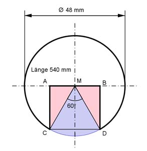

Aufgabe 170 Aus dem Rundstahl, Dichte 7,85 g/cm3, wird über die gesamte Länge die dargestellte Nut ausgefräst. Wie schwer ist der Stab nach dem Ausfräsen?

Wegen des Mittelpunktwinkels von 60° ist die blaue Fläche ein Sechstel des Kreises mit dem Durchmesser 48 mm. r = 48 mm/2 = 24 mm Das Dreieck MCD ist ein gleichseitiges Dreieck und ein Sechstel eines regelmäßigen Sechsecks. --> CD = AB = CM = r = 24 mm Grundfläche G des Rundstahls ohne Ausfräsung: G = π * r2 G = π * 242 mm2 = 1 808,64 mm2 = 18,09 cm2 Blauer Kreisauschnitt Ablau : π * r2 π * 242 mm2 Ablau = -------- = -------------- = 6 6 = 301,44 mm2 = 3,014 cm2 Rotes Dreieck ADreieck : Der Winkel im roten Dreieck bei M = 60° CA CA sin 60° = ---- = -------- |*24 mm r 24 mm CA = sin 60° * 24 mm = 0,866 * 24 mm = 20,8 mm AM = 24 mm/2 = 12 mm AM * CA 2 * ADreieck = 2 * ----------- = 2 = 12 mm * 20,8 mm = 249,6 mm2 2 * ADreieck = 2,5 cm2 Volumen des ausgefrästen Stabes: l = 540 mm = 54 cm V = (G - Ablau - 2 * ADreieck) * l V = (18,09 cm2 - 3,014 cm2 - 2,5 cm2) * 54 cm = = 679,1 cm3 m = V * р m = 679,1 cm3 * 7,85 g/cm3 = 5 330,9 g = 5,331 kg